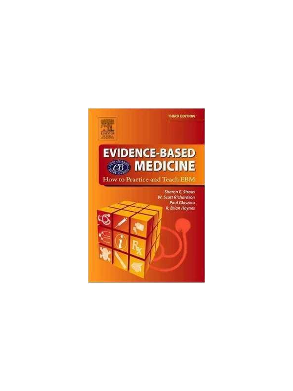

O que é Medicina Baseada em Evidências e o que é Raciocínio clínico
- Breve histórico da MBE
- Integração entre MBE, experiência clínica e valores dos pacientes
- Importância para a prática clínica e para a saúde pública
Qual a diferença entre Raciocínio clínico e MBE?
Apresentação
Raciocínio clínico é o conjunto de processos mentais — conscientes e inconscientes — que os profissionais de saúde utilizam para coletar, interpretar e integrar informações com o objetivo de tomar decisões diagnósticas e terapêuticas. Esses processos envolvem desde o reconhecimento rápido de padrões familiares (pensamento intuitivo ou “sistema 1”), até análises mais lentas, deliberadas e estruturadas (pensamento analítico ou “sistema 2”), conforme descrito por Daniel Kahneman. O raciocínio clínico está sujeito a vieses cognitivos, como o viés de ancoragem, o excesso de confiança e o viés de confirmação, que podem comprometer a acurácia diagnóstica.
O universo do Raciocínio Clínico está intimamente ligado ao universo da comunicação clínica. Coletar informações clínicas relevantes para a tomada de decisões depende da nossa habilidade de comunicação com o paciente, conseguir informações relevantes sobre o paciente, sua doença e sua experiência de adoecimento. Por este motivo, desenvolver habilidades de raciocínio clínico envolve tanto o aprimoramento da intuição baseada na experiência quanto a capacidade de refletir criticamente sobre as próprias decisões. Estratégias como o ensino deliberado, a discussão de casos clínicos e o feedback estruturado são fundamentais para fortalecer essas habilidades ao longo da formação médica e da prática profissional.
Medicina baseada em evidências (MBE), por outro lado, é uma abordagem que busca integrar a melhor evidência científica disponível com a experiência clínica do profissional e os valores e preferências do paciente. A MBE valoriza a utilização sistemática de pesquisas clínicas — especialmente aquelas com alta qualidade metodológica — para apoiar decisões clínicas. Ela fornece ferramentas e diretrizes para reduzir vieses e incertezas na prática médica.
Apesar de distintas, essas abordagens se complementam. O que aprendermos sobre raciocínio clínico no encontro 1 será necessário para aplicar os conhecimentos adquiridos sobre BEM no encontro 2 de forma adequada, adaptando as evidências à realidade e ao contexto individual do paciente. Por outro lado, o que aprendermos sobre MBE no encontro 2 dará maior lastro para qualificar as discussões de raciocínio clínico do encontro 1, reforçando o olhar analítico e crítico sobre as decisões que estamos tomando junto com nossos pacientes.
Estudar estes dois temas de forma conjunta será fundamental para promover uma prática mais segura, crítica e centrada nas necessidades de cada paciente. Poderemos exercitar nosso raciocínio clínico e perceber nossos próprios vieses de raciocínio ao longo das aulas e em exercícios de dramatização e teremos tempo reservado para avaliarmos criticamente as melhores evidências para cada caso que discutimos. A tabela seguinte apresenta uma organização esquemática das duas disciplinas, mostrando o que as distingue em diversos aspectos.
| Aspecto | Raciocínio Clínico | Medicina Baseada em Evidências (MBE) |
| Foco principal | Processamento individual de informações clínicas | Integração de evidências científicas à prática |
| Base de atuação | Relação médico-paciente. Experiência, conhecimento e contexto do paciente. | Estudos científicos de alta qualidade |
| Tipo de abordagem | Intuitiva e/ou analítica – vários tipos de raciocínio clínico utilizados, a depender da situação clínica que temos à nossa frente | Sistemática e crítica. Métodos e enquadramentos para a busca de informações, análise crítica e validação para cada caso em questão. |
| Papel do profissional | Ativo na interpretação e decisão | Ativo na busca e aplicação das evidências |
| Relação com o paciente | Personalizada e contextualizada à cada necessidade de saúde de cada paciente. | Centrada nas evidências sobre uma pergunta específica que, após ser respondida, fará parte da tomada de decisão compartilhada junto ao paciente. |
| Complementaridade | Utiliza habilidades e ferramentas para navegar no universo de cuidado único de cada paciente. Aplica evidências científicas para facilitar a aplicação das habilidades de raciocínio clínico de forma contextualizada. | Permite um olhar analítico e um julgamento crítico para fornecer uma base científica ao raciocínio clínico. |
O que é Medicina Baseada em Evidências? e por que precisamos dela?
Como apresentado por Paul P. Glasziou, Chris Del Mar e Janet Salisbury no livro “Evidence-based Practice Workbook - Bridging the Gap between Health Care Research and Practice” de 2007, nosso trabalho como médicos demanda que tomemos decisões cotidianamente. Perguntas como qual teste diagnóstico utilizar ou qual tratamento seria mais eficaz para um determinado paciente fazem parte da nossa rotina. As respostas para essas perguntas dependem do conhecimento, habilidades e atitudes do profissional de saúde, dos recursos disponíveis e das preocupações, expectativas e valores do paciente. No início da década de 1990, David Sackett e seus colegas da McMaster University, no Canadá, cunharam o termo “medicina baseada em evidências”, definindo-a como “a integração da experiência clínica individual com a melhor evidência clínica externa disponível a partir de pesquisas sistemáticas” para alcançar o melhor manejo possível do paciente. Mais adiante, incluindo as ideias, preocupações e expectativas do paciente – algo que aprendemos nos módulos de comunicação clínica – chegou-se à definição “medicina baseada em evidências é a integração da melhor evidência científica disponível com expertise clínica e valores do paciente”. A MBE busca melhorar a qualidade da informação na qual as decisões de saúde são feitas. Como isto não é simples de ser feito, ela foi sistematizada de forma a auxiliar os profissionais a evitarem a “sobrecarga de informações” e os ajuda a encontrar e aplicar as informações mais relevantes para cada situação e cada paciente. O termo MBE não é exclusivo da medicina e enfatiza que a “evidência” em questão é evidência empírica sobre o que realmente funciona ou não funciona na prática, e não apenas evidência científica para um mecanismo de ação, para um experimento in vitro. Pelo contrário, a evidência aqui explicitada deve sempre fazer referência à efeitos diretos sobre o paciente, sobre a sua doença, sobre sua vida e sobre sua experiência de adoecimento.
Como princípios fundamentais, a MBE deve sempre incluir:
Reconhecer as incertezas no conhecimento clínico.
Utilizar informações de pesquisa para reduzir essas incertezas.
Discriminar entre evidência forte e fraca.
Quantificar e comunicar as incertezas com probabilidades.
Infelizmente existe uma grande lacuna entre o que sabemos a partir da pesquisa científicas e o que fazemos na prática clínica. Devido à grande quantidade de pesquisas publicadas – algumas válidas e outras nem tanto – os clínicos compreensivelmente desconhecem grande parte delas ou não possuem as ferramentas necessárias para avaliá-las quanto à qualidade, relevância e magnitude do seu efeito. Além disso, muitos pesquisadores têm dificuldade em traduzir os resultados obtidas em seus estudos de forma palatável para que clínicos consigo entender melhor como estes resultados podem ser traduzidos para a prática clínica.
Já em 1972 o epidemiologista britânico Archie Cochrane chamava a atenção para o fato de que grande parte das decisões terapêuticas era baseada em escolhas informais feitas a partir de uma vasta e desigual produção científica, em opiniões de especialistas ou, em muitos casos, na prática de tentativa e erro. Infelizmente, evidências robustas feitas através de revisões sistemáticas da literatura dificilmente se traduziam diretamente em condutas práticas.
A produção científica em saúde cresce continuamente, gerando um volume de informações tão grande que se torna impraticável para qualquer médico (principalmente médicos de família) acompanhar tudo o que é publicado. Como já visto na semana passada, todos nós temos diversas dúvidas ao longo de um dia de atendimento. Registrar e escrever estas dúvidas na forma de uma pergunta SMART é raro. Buscar informações relevantes para responder a esta pergunta, mais raro ainda. Além da dificuldade em transformar a inquietação em uma pergunta de estudo objetiva, o tempo necessário para encontrar respostas para as diversas dúvidas que se apresentam diariamente é um dos fatores determinantes para não sistematizarmos nosso estudo e nossa busca por evidências. Isto torna a prática baseada em evidências muito mais um ideal do que uma prática cotidiana para muitos médicos.
Como surgiram os 5 As da Medicina Baseada em Evidências (MBE)
A (MBE), ou Evidence-Based Medicine (EBM), surgiu como uma proposta transformadora no final dos anos 1980, consolidando-se nos anos 1990. A ideia pioneira foi gestada por um grupo de professores e pesquisadores da McMaster University, no Canadá, liderados por nomes como David Sackett, Gordon Guyatt, Brian Haynes e outros. Esses profissionais estavam profundamente incomodados com um problema recorrente: o conhecimento gerado por pesquisas clínicas de alta qualidade demorava a chegar à prática médica cotidiana, ou simplesmente não chegava.
Infelizmente existe uma grande lacuna entre o que sabemos a partir da pesquisa científicas e o que fazemos na prática clínica. Devido à grande quantidade de pesquisas publicadas – algumas válidas e outras nem tanto – os clínicos compreensivelmente desconhecem grande parte delas ou não possuem as ferramentas necessárias para avaliá-las quanto à qualidade, relevância e magnitude do seu efeito. Além disso, muitos pesquisadores têm dificuldade em traduzir os resultados obtidas em seus estudos de forma palatável para que clínicos consigo entender melhor como estes resultados podem ser traduzidos para a prática clínica.
Já em 1972 o epidemiologista britânico Archie Cochrane chamava a atenção para o fato de que grande parte das decisões terapêuticas era baseada em escolhas informais feitas a partir de uma vasta e desigual produção científica, em opiniões de especialistas ou, em muitos casos, na prática de tentativa e erro. Infelizmente, evidências robustas feitas através de revisões sistemáticas da literatura dificilmente se traduziam diretamente em condutas práticas.
A produção científica em saúde cresce continuamente, gerando um volume de informações tão grande que se torna impraticável para qualquer médico (principalmente médicos de família) acompanhar tudo o que é publicado.
Todos nós temos diversas dúvidas ao longo de um dia de atendimento. Registrar e escrever estas dúvidas na forma de uma pergunta SMART é raro.
Buscar informações relevantes para responder a esta pergunta, mais raro ainda.
Além da dificuldade em transformar a inquietação em uma pergunta de estudo objetiva, o tempo necessário para encontrar respostas para as diversas dúvidas que se apresentam diariamente é um dos fatores determinantes para não sistematizarmos nosso estudo e nossa busca por evidências. Isto torna a prática baseada em evidências muito mais um ideal do que uma prática cotidiana para muitos médicos.
O que se observava era uma lacuna entre a produção do conhecimento científico sobre eficácia de intervenções terapêuticas ou do poder de teste diagnósticos e a prática médica que se realizava junto aos pacientes, ou seja, o que os médicos recomendavam aos seus pacientes era amparado não por evidências científicas.
Muitas condutas seguiam baseadas exclusivamente na autoridade de especialistas, na tradição institucional ou na experiência pessoal, mesmo que houvesse novas evidências disponíveis que apontassem em outra direção.
O grupo da McMaster propôs, então, que fosse incorporado ao raciocínio clínico médico um conjunto de ações que incluísse o uso consciente e sistemático da epidemiologia clínica, da bioestatística e da leitura crítica de artigos científicos.
Este conjunto de ações foi então sistematizado em uma sequência pragmática para que médicos possam, a partir de uma pergunta clínica, encontrar quais são as melhores evidências disponíveis para respondê-la adequadamente.
Este conjunto pragmático de ações não é algo trivial: exigem compreensão e prática de conceitos complexos como medidas de frequência de um evento (incidência e prevalência), risco relativo, odds ratio, risco absoluto, redução absoluta do risco, número necessário para tratar (number needed to treat – NNT), número necessário para causar dano (Number needed to harm – NNH), intervalos de confiança, viés de seleção, validade interna e externa, entre outros. Parte do desafio da MBE foi justamente criar um caminho pedagógico acessível que permitisse a profissionais de diferentes níveis de formação se apropriar desses instrumentos.

Na Estante Virtual está disponível.
O termo “Evidence-Based Medicine” foi utilizado pela primeira vez por Gordon Guyatt em 1991, e a definição clássica de David Sackett, publicada no editorial Evidence based medicine: what it is and what it isn’t no British Medical Journal (BMJ) em 1996, a descreve como o uso consciente, explícito e criterioso da melhor evidência atual na tomada de decisões sobre o cuidado de pacientes individuais.